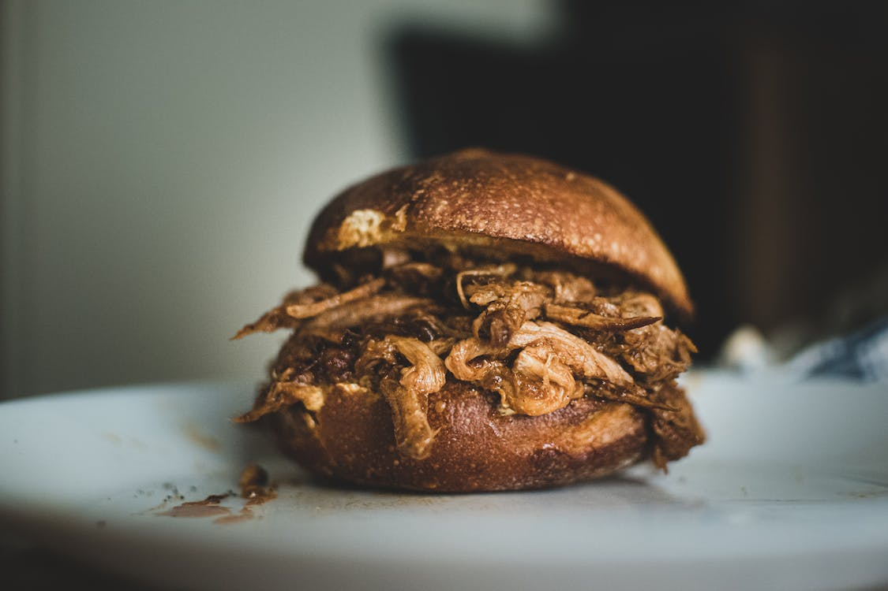

Pulled Pork

Easy Pulled Pork
This will be super simple pulled pork. The one I have right now, I preseasoned and froze. Once it defrosts
in the fridge for a few days. We can put it in the instant pot.
Ingredients
- Pork Sholder or Butt
- 1 Tbsp brown sugar
- 1 Tbsp chili powder
- 1 tsp each onion, glarli, cumin, and salt
Steps
- Place all seaonings on meat
- cook in instant pot for at least 6 hours
- optionaly you can freeze and pull out a few days before your read to cook